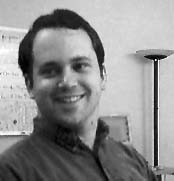

Jeffrey K. Hollingsworth
Email: hollings@cs.umd.edu
Current Position: Professor & Associate Chair
Office: 4155 A.V. Williams
Phone: +1 301 405 2708
Technical Material:
Research Interests:
Software Distributions
Affiliated Research Groups:
Classes:
Other Professional Links:
Other Interests:
Address:
Jeff Hollingsworth
Computer Science Department
University of Maryland
College Park, MD 20742
To announce that there must be no criticism of the president, or that we are to stand by the president, right or wrong,is not only unpatriotic and servile, but is morally treasonable to the American public.
-- Theodore Roosevelt
Last updated on Jan 23, 2010